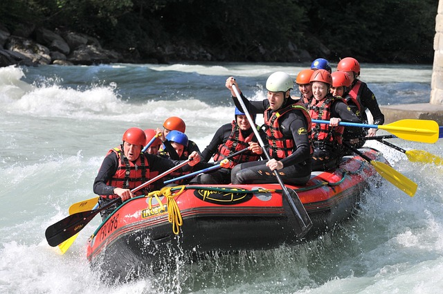
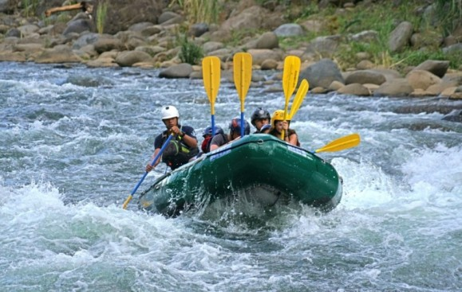
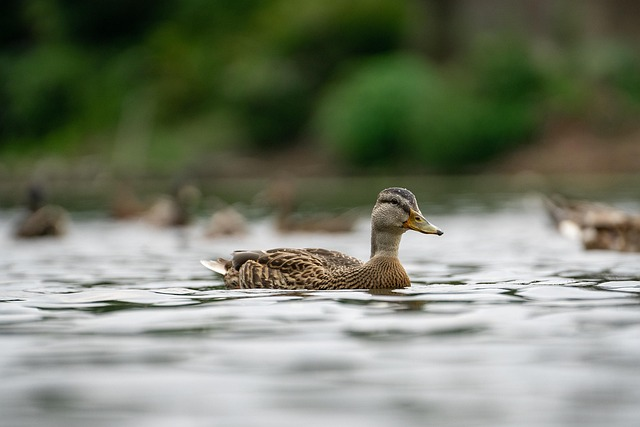
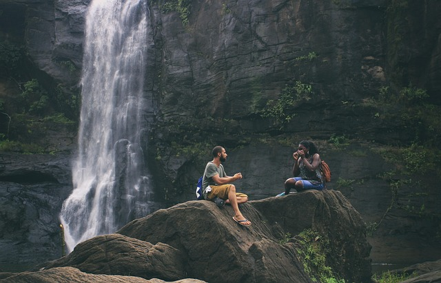
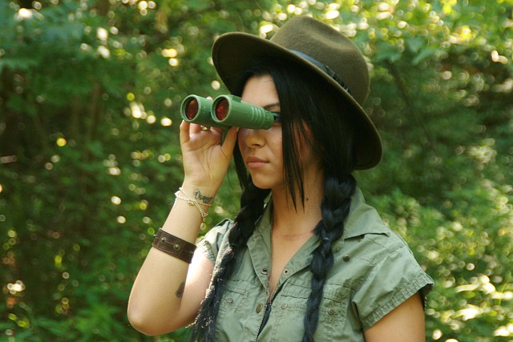
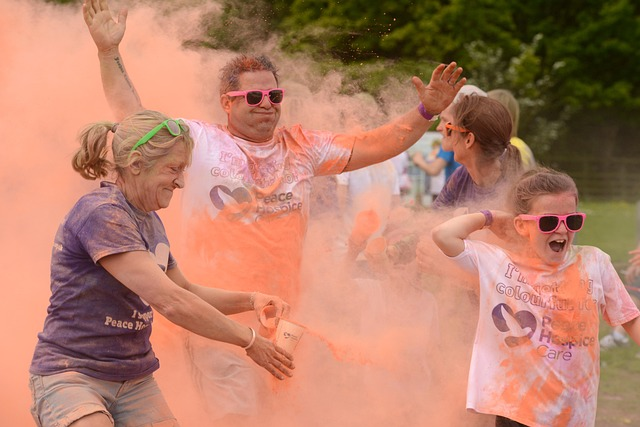

Our Mission

Our mission is to provide thrilling, safe, and unforgettable whitewater rafting experiences for families and adventurers alike. We believe in connecting people with nature through adrenaline-pumping journeys.

Our mission is to provide thrilling, safe, and unforgettable whitewater rafting experiences for families and adventurers alike. We believe in connecting people with nature through adrenaline-pumping journeys.
Founded in 2010, Dry River Rafting began with just two rafts and a passion for the rapids. Over the last decade, we have expanded to over twenty professional guides and have safely navigated thousands of adventurers down the most beautiful rivers in the country.

We pride ourselves on conservation and safety, providing state-of-the-art equipment and unmatched expertise. Whether you're a first-timer or a seasoned rafter, our history is built on sharing the beauty and thrills of the river with you.




